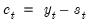
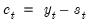
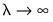
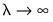

Phillips and Shi (2020) have proposed iterating the HP filter to produce a “smarter smoothing device.” This boosted HP filter takes the cyclical series,

and runs the filter on it one more time to produce a new smoothed and cycle series. The filtering process is repeated, producing a further smoothed series at each iteration. The advantage of this iterative procedure is that the final smoothed series is less reliant on the choice of

. Phillips and Shi recommend repeating the process either after a set number of iterations, or through the use of information criteria to decide the optimal number of iterations.
First, provide a name for the . EViews will suggest a name, but you can always enter a name of your choosing. If you wish to save a , specify a name in the edit field.
Next, specify an integer value for the smoothing parameter,  . You may specify
. You may specify  directly by clicking on the
directly by clicking on the radio button and entering a value in the edit field, or you may specify a value using the frequency power rule of Ravn and Uhlig (2002) (the number of periods per year divided by 4, raised to a power, and multiplied by 1600 by clicking on the and entering a value in the edit field.
The Boosting section of the dialog offers settings for iterative boosting of the HP filter. You may choose between stopping based on the maximum number of iterations or using an Information criteria.
If you click on , EViews will stop based on the entry in the
Max. Iterations edit field. By default, there will be no boosting as only one iteration of the filter will be performed.
Selecting the Information criteria radio button instructs EViews to select the optimal number of iterations using information criteria. The
Max. Iterations edit field should be used to specify the number of iterations to be considered.
When you click on OK, EViews displays a graph of the filtered series together with the original series. Note that only data in the current workfile sample are filtered. Observations for the smoothed and cyclical series outside the current sample will be filled with NAs.


 by minimizing the variance of
by minimizing the variance of  around
around  , subject to a penalty that constrains the second difference of
, subject to a penalty that constrains the second difference of  . The HP filter chooses the values of
. The HP filter chooses the values of  to minimize:
to minimize: series is often referred to as the trend series. The cyclical component
series is often referred to as the trend series. The cyclical component  of the original series can be computed as .
of the original series can be computed as . . The larger the
. The larger the  , the smoother the
, the smoother the  . As ,
. As ,  approaches a linear trend.
approaches a linear trend. :
: